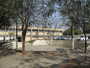
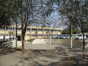

Fatec Jales
A fatec possui uma infraestrutura de alto nivel possuindo diversos computadores distribuidos em 6 laboratorios e em outras salas no predio. A fatec possui ainda salas com data shows e equipamentos de som para todos de aulas, além de clases com ar condicionado.
A fatec ainda possui excelente acessibilidade possuindo rampas onde necessario, salas amplas e elevadores para deficientes fisicos. A faculdade possui ainda uma biblioteca com muitos livros acadêmicos e dicionarios.
A Fatec oferece três cursos de graduação sendo esses o curso de Sistemas para internet em periodos diurno e noturno, o curso de Gestão empresarial noturno e o curso de Agronegocio noturno, a Instuição foi fundada em 2008 em jales e cada curso possui duração minima de 6 semestres (3 anos), e duração maxíma de 10 semestres (5 anos).
Imagens

 
